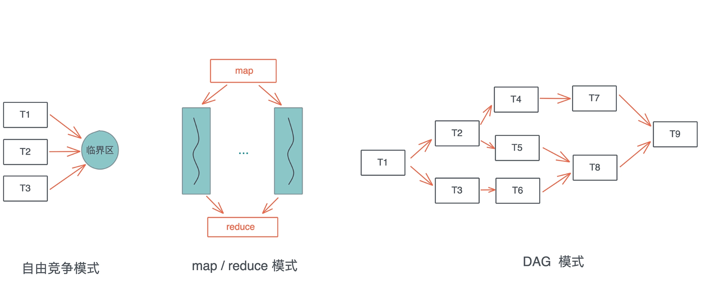
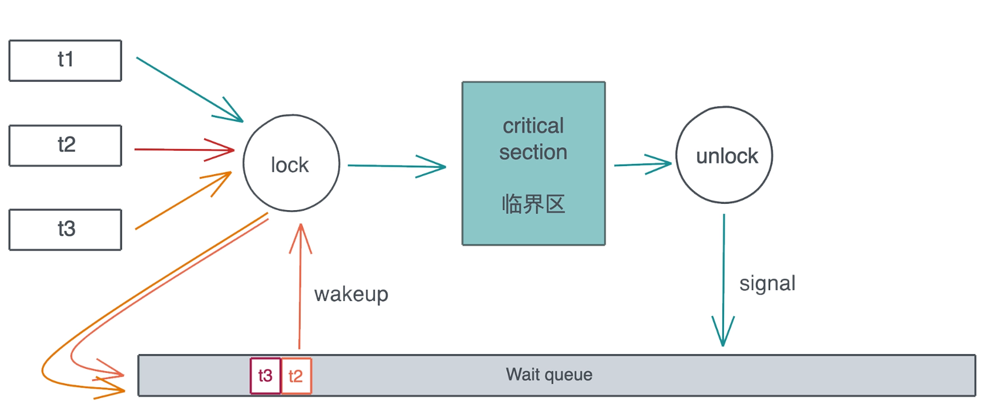
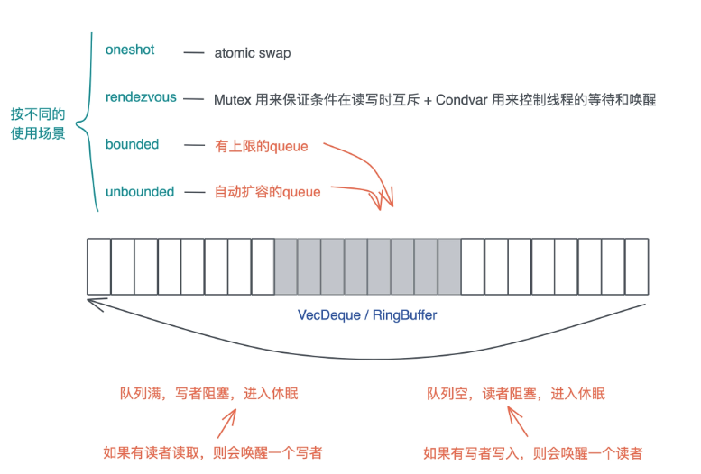

无畏并发
Concurrent: 程序的不同部分之间独立的运行, 同时处理很多事情的能力.Parallel: 程序的不同部分同时运行, 同时执行很多事情的手段.
1. Sync和Send trait
#![allow(unused)]
fn main() {
pub unsafe auto trait Send {}
pub unsafe auto trait Sync {}
}这两个trait(std::marker::Sync和std::marker::Send)都是 unsafe auto trait, auto 意味着编译器会在合适的场合, 自动为数据结构添加它们的实现, 而 unsafe 代表实现的这个 trait 可能会违背 Rust 的内存安全准则, 如果开发者手工实现这两个 trait, 要自己为它们的安全性负责.
Send/Sync 是 Rust 并发安全的基础:
-
Send: 允许线程间转移所有权,Rc<T>没有实现Send,它只用于单线程的情景.- 任何完全由
Send类型组成的类型也被标记为Send - 除了原始指针之外,几乎所有的基础类型都是实现了
Send
- 任何完全由
-
Sync: 允许从多线程访问.- 实现了
Sync的类型可以安全的被多个线程引用 - 如果
T是Sync,那&T就是Send, 引用可以被安全的送往另一个线程.
- 实现了
-
手动来实现
Send和Sync是很难保证安全的,需要很谨慎的使用unsafe代码.-
如果一个类型
T实现了Send trait, 意味着T可以安全地从一个线程移动到另一个线程, 也就是说所有权可以在线程间移动. -
如果一个类型
T实现了Sync trait, 则意味着&T可以安全地在多个线程中共享. 一个类型T满足Sync trait, 当且仅当&T满足Send trait.
-
对于 Send/Sync 在线程安全中的作用, 可以这么看, 如果一个类型 T: Send, 那么 T 在某个线程中的独占访问是线程安全的；如果一个类型 T: Sync, 那么 T 在线程间的只读共享是安全的.
对于我们自己定义的数据结构, 如果其内部的所有域都实现了 Send / Sync, 那么这个数据结构会被自动添加 Send / Sync.
标准库中, 不支持 Send / Sync 的数据结构主要有:
- 裸指针
*const T/*mut T. 它们是不安全的, 所以既不是Send也不是Sync. UnsafeCell不支持Sync. 也就是说, 任何使用了Cell或者RefCell的数据结构不支持Sync.- 引用计数
Rc不支持Send也不支持Sync. 所以Rc无法跨线程.
2. 并发常见工作模式

- 自由竞争模式下, 多个并发任务会竞争同一个临界区的访问权
- map/reduce 模式, 把工作打散, 按照相同的处理完成后, 再按照一定的顺序将结果组织起来
- DAG 模式, 把工作切成不相交的、有依赖关系的子任务, 然后按依赖关系并发执行.
3. Atomic
Atomic是所有并发原语的基础, 它为并发任务的同步奠定了坚实的基础.可以通过一条指令读取某个内存地址, 判断其值是否等于某个前置值, 如果相等, 将其修改为新的值. 这就是 Compare-and-swap 操作, 简称CAS
#![allow(unused)]
fn main() {
pub fn compare_exchange(
&self,
current: bool,
new: bool,
success: Ordering,
failure: Ordering
) -> Result<bool, bool>
pub enum Ordering {
Relaxed,
Release,
Acquire,
AcqRel,
SeqCst,
}
}可以看到 compare_exchange函数有两个和Ordering的奇怪参数, Ordering是一个 enum.
Relaxed: 最宽松的规则, 它对编译器和CPU不做任何限制, 可以乱序执行.Release, 当我们写入数据时, 那么- 对于当前线程, 任何读取或写入操作都不能被乱序排在这个 store 之后.
- 对于其它线程, 任何使用了
Acquire来读取这个atomic的数据, 那么它们看到的是修改后的结果.
Acquire, 当我们读取数据时, 那么- 对于当前线程, 任何读取或者写入操作都不能被乱序排在这个读取之前.
- 对于其它线程, 如果使用了
Release来修改数据, 那么, 修改的值对当前线程可见.
AcqRel是Acquire和Release的结合, 同时拥有Acquire和Release的保证. 这个一般用在fetch_xxx上, 比如你要对一个atomic自增1, 你希望这个操作之前和之后的读取或写入操作不会被乱序, 并且操作的结果对其它线程可见.SeqCst是最严格的Ordering,除了AcqRel的保证外,它还保证所有线程看到的所有SeqCst操作的顺序是一致的.
#![allow(unused)]
fn main() {
while self
.locked
.compare_exchange(false, true, Ordering::Acquire, Ordering::Relaxed)
.is_err()
{
// 性能优化: compare_exchange 需要独占访问, 当拿不到锁时, 我们
// 先不停检测 locked 的状态, 直到其 unlocked 后, 再尝试拿锁
while self.locked.load(Ordering::Relaxed) == true {}
}
}注意, 我们在
while loop里, 又嵌入了一个loop. 这是因为CAS是个代价比较高的操作, 它需要获得对应内存的独占访问 (exclusive access) , 我们希望失败的时候只是简单读取 atomic 的状态, 只有符合条件的时候再去做独占访问, 进行CAS. 所以, 看上去多做了一层循环, 实际代码的效率更高.
4. Mutex
SpinLock, 顾名思义,就是线程通过CPU 空转(spin, 就像前面的 while loop)忙等 (busy wait) , 来等待某个临界区可用的一种锁. 这种通过 SpinLock做互斥的实现方式有使用场景的限制: 如果受保护的临界区太大, 那么整体的性能会急剧下降, CPU 忙等, 浪费资源还不干实事, 不适合作为一种通用的处理方法.
通用的解决方案是: 当多个线程竞争同一个 Mutex 时, 获得锁的线程得到临界区的访问, 其它线程被挂起, 放入该 Mutex 上的一个等待队列里. 当获得锁的线程完成工作, 退出临界区时, Mutex 会给等待队列发一个信号, 把队列中第一个线程唤醒, 于是这个线程可以进行后续的访问. 整个过程如下:

当然, 这样实现会带来公平性的问题: 如果新来的线程恰巧在 spin 过程中拿到了锁, 而当前等待队列中还有其它线程在等待锁, 那么等待的线程只能继续等待下去, 这不符合 FIFO, 不适合那些需要严格按先来后到排队的使用场景. 为此, parking_lot 提供了 fair mutex.
5. Condvar
操作系统还提供了 Condvar. Condvar 有两种状态:
- 等待 (wait) : 线程在队列中等待, 直到满足某个条件.
- 通知 (notify) : 当
condvar的条件满足时, 当前线程通知其他等待的线程可以被唤醒. 通知可以是单个通知, 也可以是多个通知, 甚至广播 (通知所有人).
6. Channel
Channel 把锁封装在了队列写入和读取的小块区域内, 然后把读者和写者完全分离, 使得读者读取数据和写者写入数据, 对开发者而言, 除了潜在的上下文切换外, 完全和锁无关, 就像访问一个本地队列一样. 所以, 对于大部分并发问题, 我们都可以用 Channel 或者类似的思想来处理 (比如 actor model).
Rust提供了以下四种Channel:
-
oneshot: 这可能是最简单的Channel, 写者就只发一次数据, 而读者也只读一次. 这种一次性的、多个线程间的同步可以用oneshot channel完成. 由于oneshot特殊的用途, 实现的时候可以直接用atomic swap来完成 -
rendezvous: 很多时候, 我们只需要通过Channel来控制线程间的同步, 并不需要发送数据.rendezvous channel是channel size为 0 的一种特殊情况. -
bounded:bounded channel有一个队列, 但队列有上限. 一旦队列被写满了, 写者也需要被挂起等待. 当阻塞发生后, 读者一旦读取数据,channel内部就会使用Condvar的notify_one通知写者, 唤醒某个写者使其能够继续写入. -
unbounded:queue没有上限, 如果写满了, 就自动扩容. 我们知道,Rust的很多数据结构如Vec、VecDeque都是自动扩容的.unbounded和bounded相比, 除了不阻塞写者, 其它实现都很类似.

根据 Channel 读者和写者的数量, Channel 又可以分为:
SPSC: Single-Producer Single-Consumer, 单生产者, 单消费者. 最简单, 可以不依赖于Mutex, 只用atomics就可以实现.SPMC: Single-Producer Multi-Consumer, 单生产者, 多消费者. 需要在消费者这侧读取时加锁.MPSC: Multi-Producer Single-Consumer, 多生产者, 单消费者. 需要在生产者这侧写入时加锁.MPMC: Multi-Producer Multi-Consumer. 多生产者, 多消费者. 需要在生产者写入或者消费者读取时加锁.
7. Actor
actor model, actor 是一种有栈协程. 每个 actor, 有自己的一个独立的、轻量级的调用栈, 以及一个用来接受消息的消息队列 (mailbox 或者 message queue) , 外界跟 actor 打交道的唯一手段就是, 给它发送消息.
9. 参考
- Robe Pike 的演讲 concurrency is not parallelism
- Jon Gjengset 的视频: Crust of Rust: Atomics and Memory Ordering
- Rust 的 spin-rs crate 提供了
Spinlock的实现 - atcix actor 实现
- bastion actor 实现
- concurrent hash map: dashmap , left-right